利用亚马逊的教育账户，可以获得AWS每年100刀额度的使用经费，足够白嫖一整年的VPS了。
但是AWS的教育优惠政策经常变动，前两年申请的学生账户可以使用AWS的所有服务，但最近就增加了很多限制。所以这部分教程时效性比较强，请关注本篇教程的最后更新时间。
在亚马逊教育官方网站可以通过学校给的edu邮箱申请账户。照着填就是了，也没什么要讲的地方。唯一需要注意的地方是，在申请之后，需要等待亚马逊那边进行审核，1~2天的样子，耐心等待。
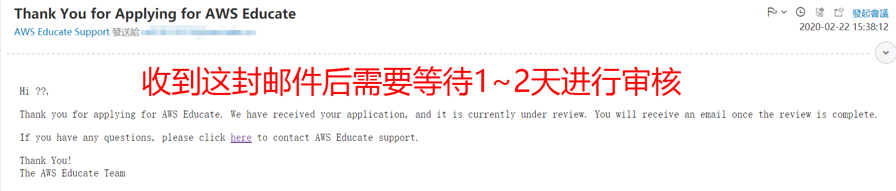申请成功之后，在教育官网登录你的账号，然后按照下面几张图的顺序进入控制台
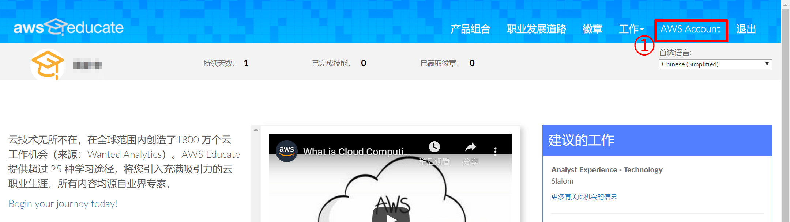 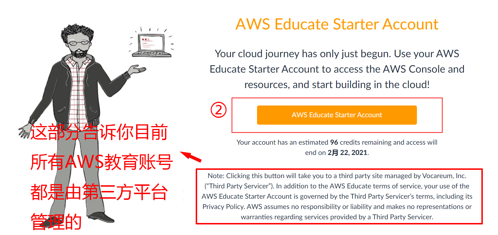 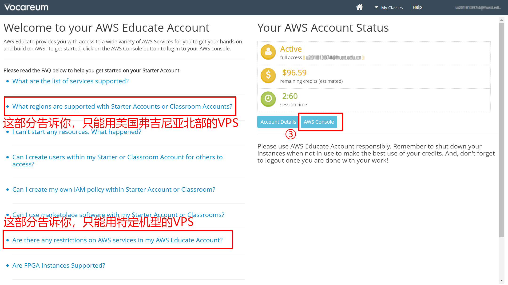教育用户被限制只能使用EC2型VPS，所以在控制台启动EC2虚拟机
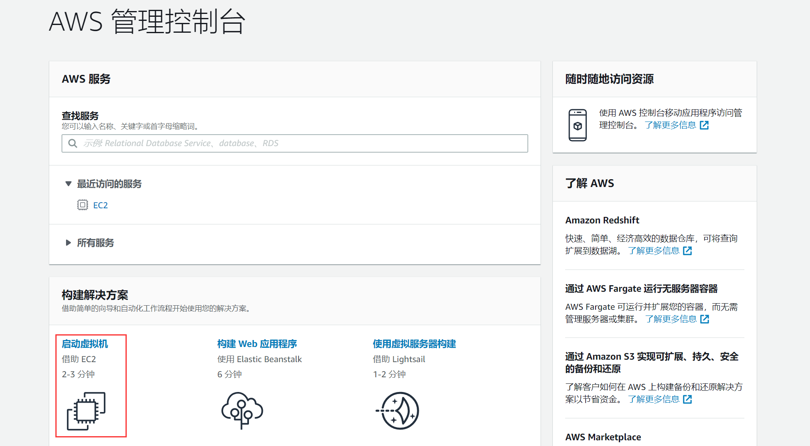步骤1：选择系统 教育用户还被限制只能使用特定种类的系统镜像，所以在界面往下滑，系统选择Ubuntu 18.04 LTS
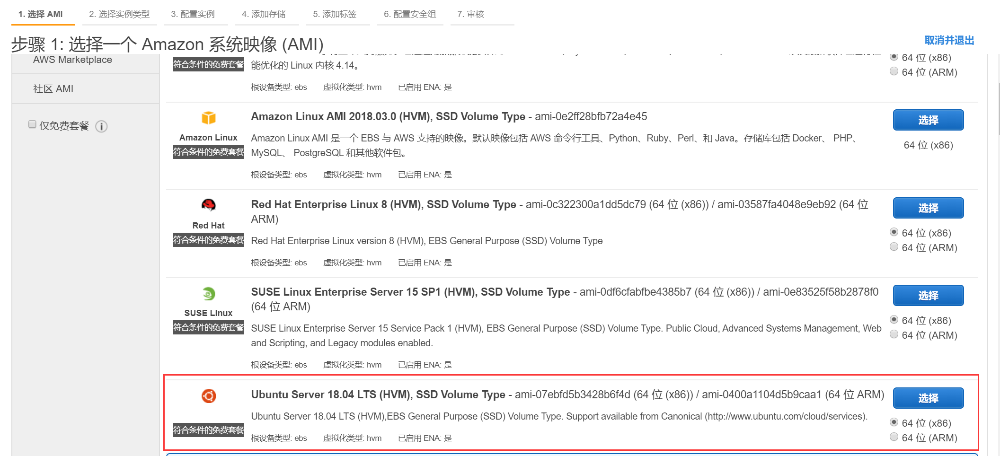步骤2：选择VPS机型 实例机型选择中，只能选择如下几种
考虑到一般VPS是365天全天运行的，因此100刀平摊到每个小时就是0.0114刀，能供选择的其实也就前两种机型了。
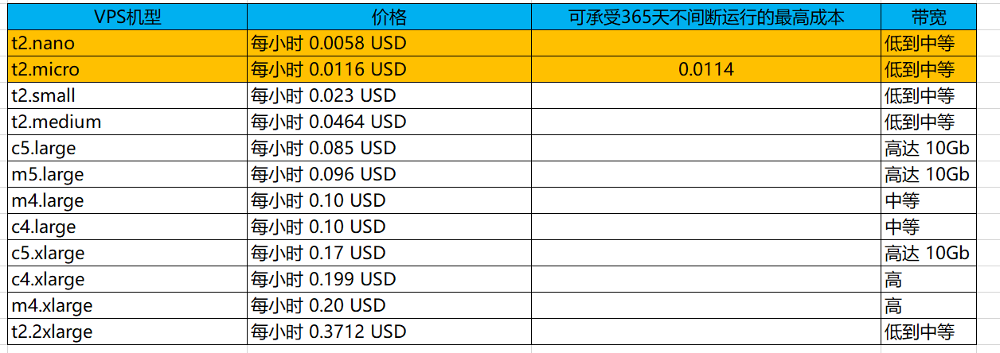 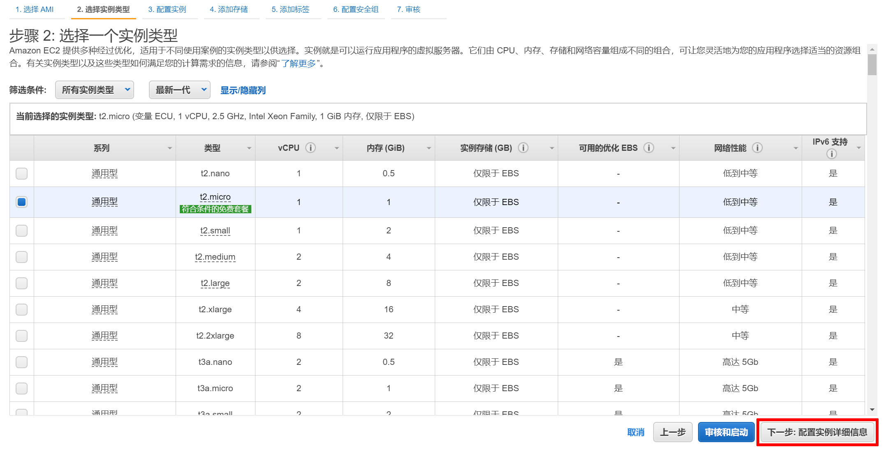步骤3、4、5：配置实例、添加储存、添加标签 都是直接下一步
步骤6：配置安全组 放行所有流量，不然无法连接到VPS
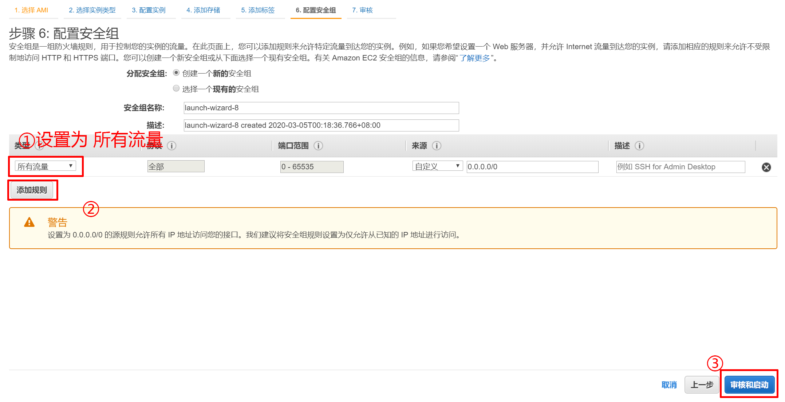步骤7：审核 点启动之后，选择创建新的密钥对，然后将密钥下载下来，在连接VPS时需要用到这个密钥。
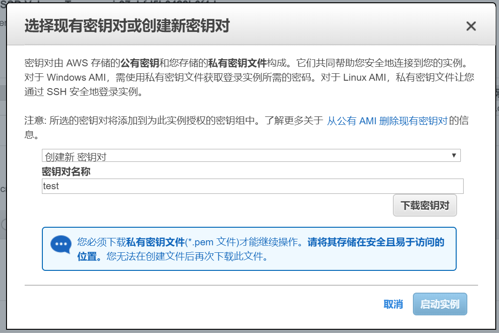先下载PuTTY,并安装
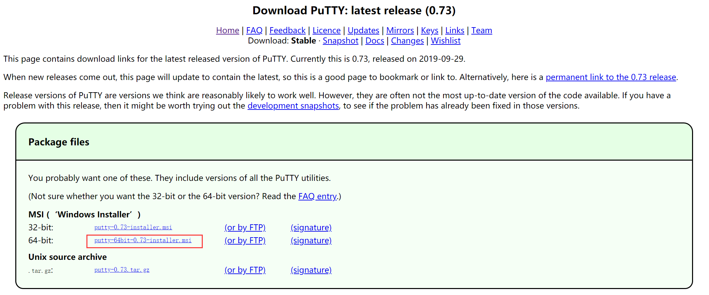在开始菜单中打开PuTTYgen
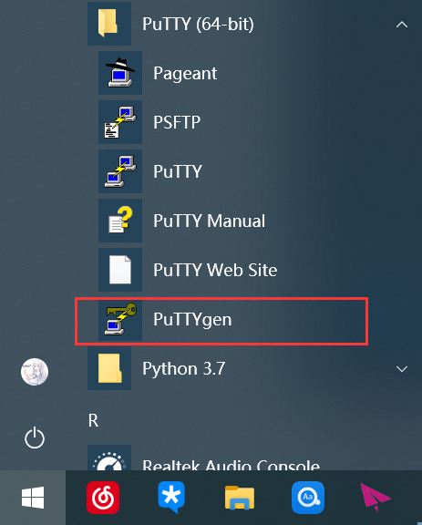点击load，文件类型改成All Files，然后打开刚刚下载的密钥
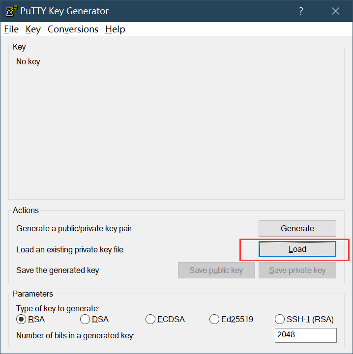 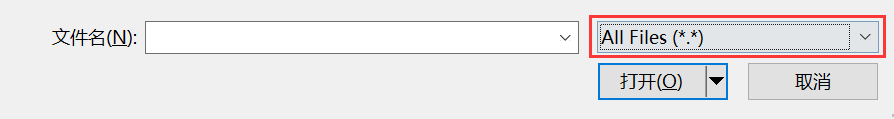然后再选择save private key，弹出的警告选“是”即可
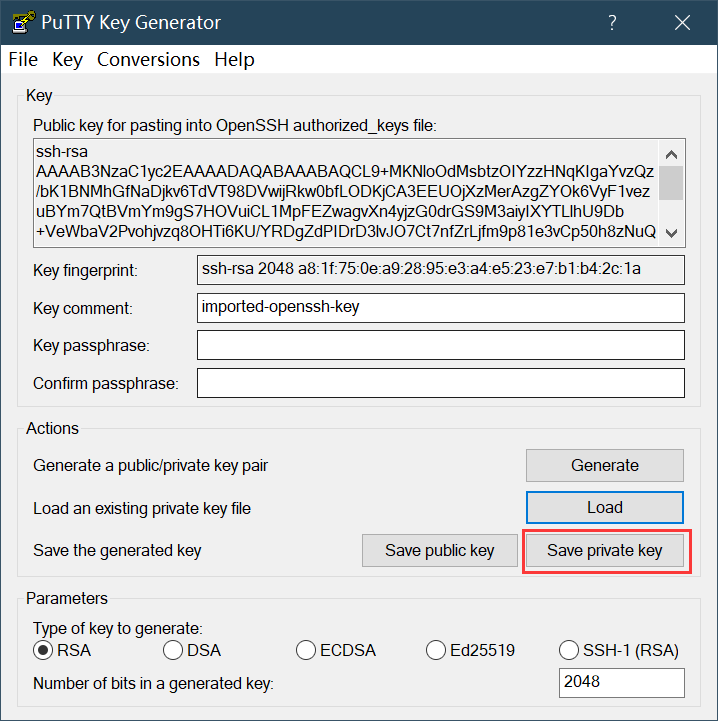在EC2控制台，找到VPS的IPv4地址，复制备用
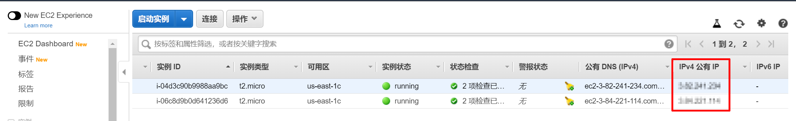打开PuTTY（注意不是PuTTYgen）,Host Name填入上一步复制的IPv4地址
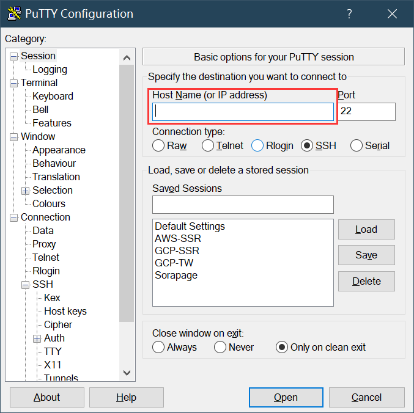在Auth子菜单中把刚刚转换的private key导入，然后点open
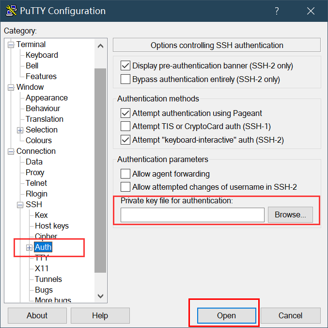在终端中输入用户名：ubuntu，回车，即可连接上VPS
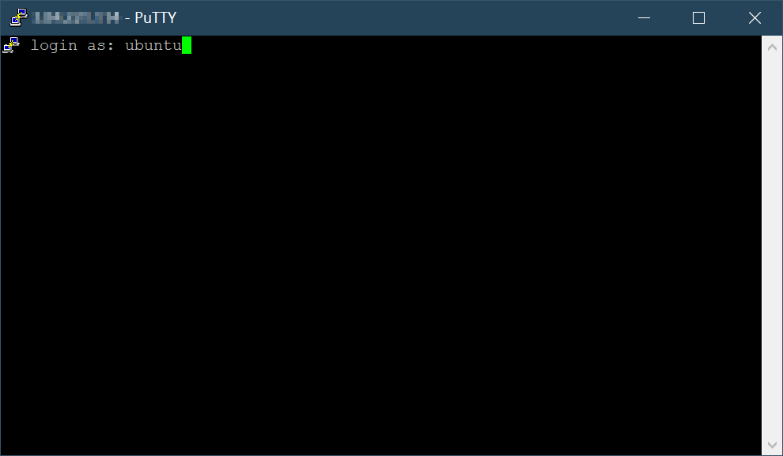